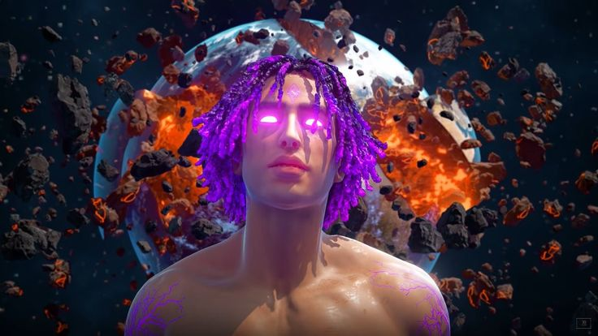
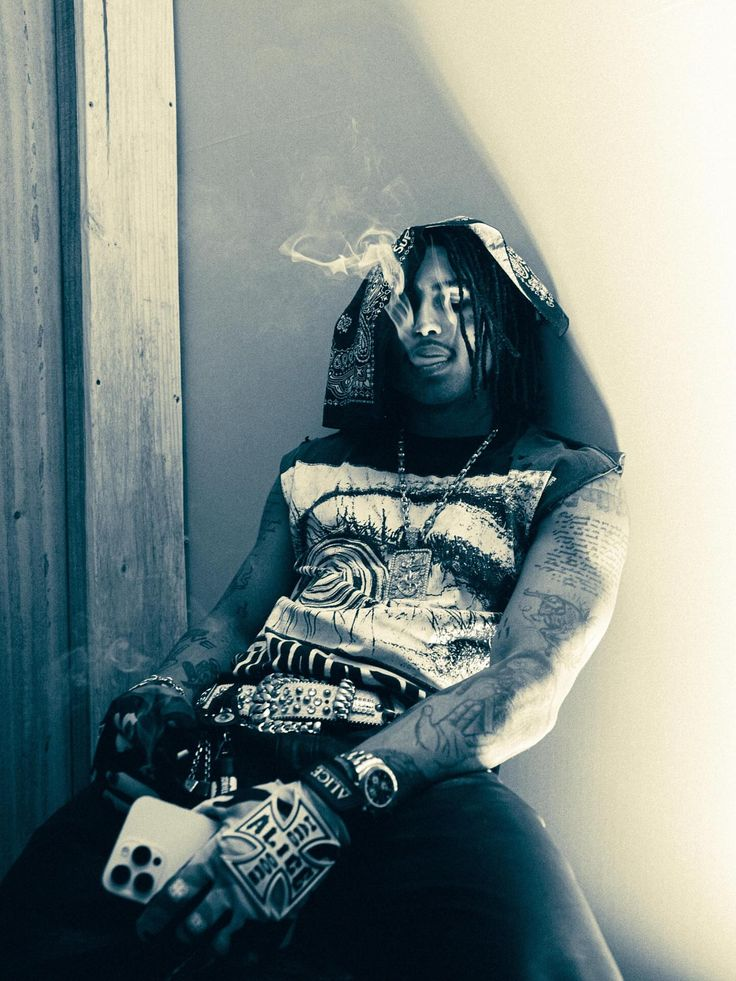

Role para descobrir01 / QUEM É MATUÊ
O artista, a inspiração
Muito além
do som.
Matuê construiu uma identidade que atravessa a música, a estética e a cultura. Este espaço celebra essa trajetória e reúne fãs que acompanham cada fase dessa jornada.
Ver galeria
A música encontra a atitude.02 / MOMENTOS
Em imagens
Na nossa memória.
Uma seleção de imagens para celebrar o artista e sua conexão com os fãs.
A comunidade
O som conecta.
A gente também.
Este é um fã-clube independente e não oficial, feito para compartilhar a admiração por Matuê.
Voltar ao início